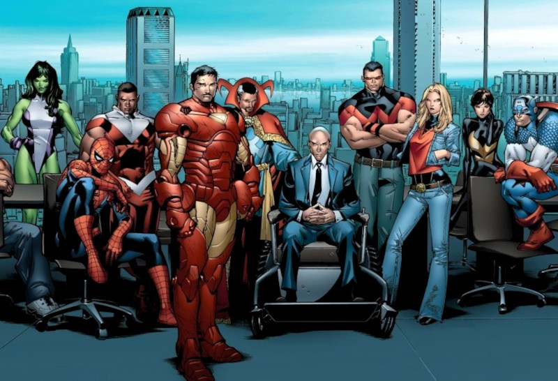

A História
Dinastia M (no idioma original, House of M) é uma minissérie de quadrinhos lançada em 2005 pela Marvel Comics, envolvendo os Novos Vingadores e os X-Men. Os acontecimentos se passam logo após os eventos de Planeta X e Vingadores: A Queda, onde Wanda Maximoff, a Feiticeira Escarlate, perde o controle de seus poderes.
Enquanto os X-Men e os Vingadores decidem o futuro da agora insana Feiticeira Escarlate, ex-vingadora e heroína mutante, Pietro se encontra com o pai, Magneto, em Genosha para tentar salvar a vida de sua irmã gêmea. O pai diz que não pode fazer nada. Ele sai inconsolável. Minutos depois, os heróis chegam para poder encontrar Wanda, visto que não há outra solução. O Homem-Aranha é o primeiro a pressentir que algo vai acontecer. Quando Charles Xavier desaparece de suas vistas, os X-Men e os Vingadores vão atrás de quem havia feito aquilo. Chegando perto de uma igreja em ruínas, eles vêem um clarão que envolve a todos. Peter Parker acorda confuso, com seu filho chorando e sua mulher, Gwen Stacy, o manda cuidar do menino.
A partir daí, todos tem vidas diferentes. Peter é casado com Gwen e tem um filho, além disso, o tio Ben está vivo. A Miss Marvel é uma grande heroína que persegue vilões como Gambit. Seu namorado, Magnum, se encontra em uma entrevista com Cristal em seu programa de TV. Scott é casado com Emma Frost. Tony Stark é um humano poderoso com várias indústrias, onde trabalham Hank McCoy e Henry Pym. Sam Wilson é um detetive que tenta descobrir os segredos do revoltoso Luke Cage e sua gangue de humanos. E, por sua vez, Wolverine faz parte de um grupo da SHIELD, companheiro de Jessica Drew, Groxo, Mística, Vampira e Noturno. O problema é que Wolverine se lembra de toda a sua vida, até mesmo de Wanda e sua insanidade.
Fugindo da SHIELD, Wolverine se joga do porta-aviões aéreo e foge à procura de qualquer herói para dizer o que estava havendo. Ele pega a revista The Pulse e vê que o mundo agora é uma utopia mutante. Quando sua equipe aparece para levá-lo de volta, ele foge e é salvo por Manto, que o leva para a resistência humana liderada por Luke Cage. Lá ele vê heróis como a Gata Negra, Punho de Ferro e o Cavaleiro da Lua. Também encontra o suposto falecido Gavião Arqueiro, pessoa a quem não esperava encontrar. Ele contou toda a história, mas quase que não acreditavam, nem mesmo Clint Barton. Foi aí que Luke apresentou Layla Miller. Ele contou que ela apareceu com o mesmo relato e que falou sobre a esposa e a filha dele, o convencendo a acreditar na história. Então foram atrás de Emma Frost, a Rainha Branca, para poder salvar o mundo. Layla usou seus poderes e Emma Frost se lembrou de tudo.
A partir daí, Layla usou seus poderes em Scott. Peter Parker foi o próximo e não aguentou o impacto da revelação, pois sentiu novamente a perda de Gwen, do filho e do Tio Ben. Decidiu que iria matar Wanda e seu pai, custasse o que custasse. Outros que foram rememoriados foram Miss Marvel, Tony Stark, Kitty Pride (que havia se tornado professora), Matt Murdock e Jenny Walters, advogados; e o Dr. Estranho, psiquiatra. Não rememoriaram o Steve Rogers, que estava velho ao não ter sido congelado nessa realidade. Os membros da equipe de Wolverine também foram rememoriados ao tentarem atacar os heróis.
Foi aí que os heróis partiram para o contra-ataque. Atacaram na hora da festa onde estavam presentes vários convidados, entre eles o Pantera Negra, Tempestade, Genis-Vell, Dr. Destino e Namor. Na luta, Wanda desapareceu mas o Dr. Estranho foi atrás dela. Foi aí que ele percebeu, em imagens feitas por Wanda, que ela havia sido enganada por Pietro. Nesse momento, o Gavião Arqueiro entrou e a acertou. Perguntou o porquê de sua morte e ela disse "Eu o ressuscitei, não é?". Willian o desmaterializou e ele sumiu. Enquanto isso, Magneto se lembrou de tudo e foi atrás de Pietro. Matou o filho que foi ressuscitado por Wanda. Ela disse muitas coisas, e por fim, falou "Chega de mutantes." Um clarão veio de novo e, quando, voltou ao normal, a maioria dos mutantes haviam perdido os seus poderes.
Muitos acreditam que essa história poderá ser adptada de alguma forma no MCU, funcionando de forma contrária e trazendo vários "mutantes" ao universo principal dos filmes.